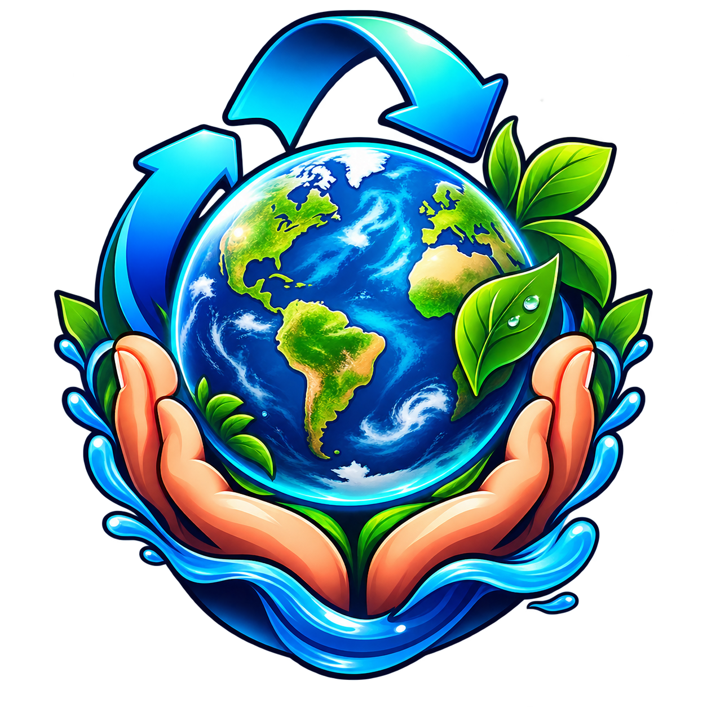

Explora Terra Vida
Tu centro ambientalTu impacto cuenta
Progreso personal🌟
Todo gran cambio comienza hoy
Completa una misión para registrar tu primera acción.
0 de 5 acciones para tu insignia

Aprende, participa y convierte tus hábitos en impacto positivo para el planeta.
Completa una misión para registrar tu primera acción.
Identifica los residuos y dales una segunda oportunidad. Las reglas pueden variar según tu municipio.
Antes de reciclar: vacía, limpia y seca los envases cuando sea posible.
Hojas, cajas limpias, periódicos y revistas. Evita papel sanitario o cartón grasoso.
Seco y limpioLatas de aluminio y acero. Enjuágalas y manipúlalas con cuidado.
EnjuagadoFrascos y botellas. Separa focos, espejos y vidrio roto; no los manipules sin protección.
Con cuidadoBotellas y envases aceptados por tu centro local. Revisa las reglas de recepción.
Vacíos y limpiosCáscaras y restos vegetales aptos para compostaje.
CompostaPilas, electrónicos, aceite y medicamentos requieren centros de acopio específicos. Nunca los mezcles con basura común.
Acopio especialElige el contenedor correcto y demuestra cuánto sabes.
Juego educativo: la clasificación real depende de las instalaciones de reciclaje de tu localidad.
Acciones sencillas que construyen hábitos duraderos.
0 de 5 misiones completadas
Explorador · Separador experto · Ahorrador de agua · Guardián de energía · Héroe del planeta.
Conocimiento que se convierte en acción.
Cierra la llave mientras te cepillas, repara fugas y reutiliza agua cuando sea seguro.
Apaga luces y equipos que no uses. Aprovecha la luz natural y elige aparatos eficientes.
Planta especies nativas, evita tirar basura en áreas naturales y respeta a la fauna silvestre.
Rechaza lo innecesario, reduce compras, reutiliza antes de desechar y prefiere productos duraderos.
Rechazar lo que no necesitas · Reducir tu consumo · Reutilizar · Reparar · Reciclar correctamente.
Organiza jornadas de limpieza con permiso y supervisión, comparte puntos de acopio verificados y propón mejoras en tu escuela o colonia.
Cada acción suma. Tu avance se guarda en este teléfono.
Tu compromiso inspira un futuro mejor.
“Dos manos, un planeta: cuidarlo está en nuestras manos.”
Terra Vida es una herramienta educativa. Consulta las normas y centros de acopio oficiales de tu localidad.